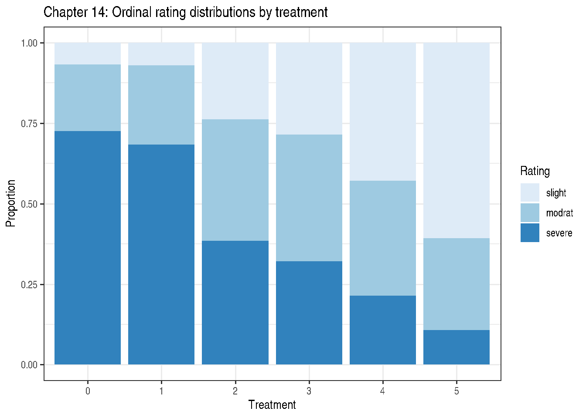
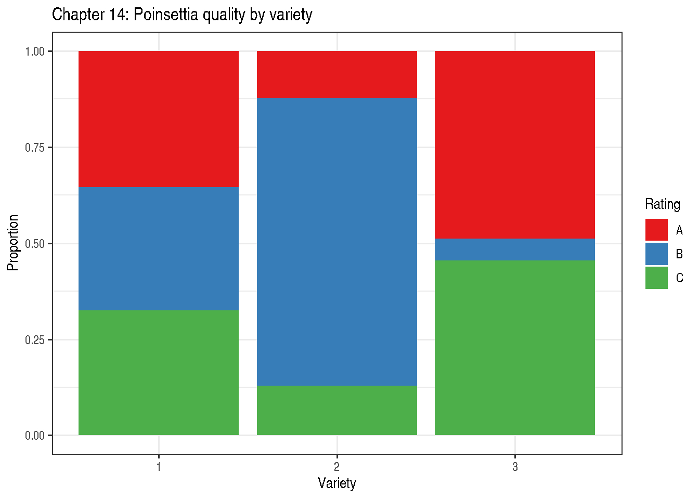

Chapter 14: Multinomial Data
Ordinal and Nominal Categorical Responses in Mixed Models
2026-05-12
Source:vignettes/chapter-14-multinomial-data.qmd
1 Overview
Chapter 14 extends GLMMs to categorical responses with more than two categories. Two cases arise:
- Ordinal (ordered categories): \(Y \in \{1 < 2 < \cdots < J\}\)
- Nominal (unordered categories): \(Y \in \{1, 2, \ldots, J\}\)
2 Ordinal Models
2.1 Proportional-Odds Model (Cumulative Logit)
\[\text{logit}[P(Y \le j \mid x)] = \theta_j - \mathbf{x}^\top\boldsymbol{\beta}\]
- \(\theta_1 < \theta_2 < \cdots < \theta_{J-1}\): threshold intercepts
- \(\boldsymbol{\beta}\): common slope vector (proportional odds assumption)
- The minus sign convention means larger \(\beta\) → higher probability of higher categories
3 Example 14.1 — Ordinal GLMM (Section 14.3)
DataSet14.1: 10 blocks × 6 treatments × 3 ordered ratings (slight < modrat < severe), stored as frequency counts (y).
'data.frame': 180 obs. of 4 variables:
$ blk : Factor w/ 10 levels "1","2","3","4",..: 1 1 1 1 1 1 1 1 1 1 ...
$ trt : Factor w/ 6 levels "0","1","2","3",..: 1 1 1 2 2 2 3 3 3 4 ...
$ rating: Ord.factor w/ 3 levels "slight"<"modrat"<..: 1 2 3 1 2 3 1 2 3 1 ...
$ y : int 1 4 23 2 7 23 4 7 18 8 ... slight modrat severe
0 19 58 203
1 20 70 194
2 67 106 108
3 80 110 90
4 120 100 60
5 170 80 30
marg14 <- aggregate(y ~ trt + rating, data = DataSet14.1, FUN = sum)
marg14$rating <- factor(marg14$rating,
levels = c("slight", "modrat", "severe"),
ordered = TRUE)
ggplot(marg14, aes(x = trt, y = y, fill = rating)) +
geom_col(position = "fill") +
labs(title = "Chapter 14: Ordinal rating distributions by treatment",
x = "Treatment", y = "Proportion",
fill = "Rating") +
scale_fill_brewer(palette = "Blues") +
theme_bw()
## Fixed-effects proportional-odds via MASS::polr (no random block effect)
## NOTE: ignores block random effect; for illustration of fixed-effect structure.
## A full proportional-odds GLMM would require ordinal::clmm or glmmTMB >= 1.2.
if (requireNamespace("MASS", quietly = TRUE)) {
fit_polr <- MASS::polr(
rating ~ trt,
weights = y,
data = DataSet14.1,
Hess = TRUE,
method = "logistic"
)
summary(fit_polr)
## Wald p-values
coef_tab <- coef(summary(fit_polr))
pval <- stats::pnorm(abs(coef_tab[, "t value"]),
lower.tail = FALSE) * 2
cbind(coef_tab, "p value" = round(pval, 4))
## Odds ratios for treatments vs reference (trt 5)
exp(coef(fit_polr)[seq_len(nlevels(DataSet14.1$trt) - 1L)])
} trt1 trt2 trt3 trt4 trt5
0.83071257 0.23465974 0.18027153 0.09872323 0.04660907 4 Non-Proportional Odds (Section 14.4)
4.1 Baseline-Category Logit
For unordered categories with category \(J\) as the reference:
\[\log\frac{P(Y = j)}{P(Y = J)} = \alpha_j + \tau_{ij}, \quad j = 1,\ldots,J-1\]
Each non-reference category has its own intercept and slope vector.
5 Example 14.2 — Non-Proportional Odds: Poinsettia Trial
DataSet14.2: 12 growers × 3 varieties × 3 quality ratings (poor < average < good), stored as frequency counts (y). The proportional-odds assumption fails; variety effects differ by rating boundary.
'data.frame': 108 obs. of 4 variables:
$ grower : Factor w/ 12 levels "1","2","3","4",..: 1 1 1 1 1 1 1 1 1 2 ...
$ variety: Factor w/ 3 levels "1","2","3": 1 1 1 2 2 2 3 3 3 1 ...
$ rating : Factor w/ 3 levels "A","B","C": 1 2 3 1 2 3 1 2 3 1 ...
$ y : int 16 15 15 6 33 6 22 3 21 16 ...
## Marginal variety × rating totals (match published table p.438)
with(DataSet14.2, tapply(y, list(variety, rating), sum)) A B C
1 192 174 176
2 65 395 68
3 262 30 244
marg14b <- aggregate(y ~ variety + rating, data = DataSet14.2, FUN = sum)
marg14b$rating <- factor(marg14b$rating, levels = c("A", "B", "C"))
ggplot(marg14b, aes(x = variety, y = y, fill = rating)) +
geom_col(position = "fill") +
labs(title = "Chapter 14: Poinsettia quality by variety",
x = "Variety", y = "Proportion",
fill = "Rating") +
scale_fill_brewer(palette = "Set1") +
theme_bw()
## Proportional-odds (fixed effects only, no grower RE) via MASS::polr
## Expected to show near-zero variety effect (proportional-odds assumption fails).
## Full GLMM with grower random effect requires ordinal::clmm or glmmTMB >= 1.2.
if (requireNamespace("MASS", quietly = TRUE)) {
fit_polr2 <- MASS::polr(
rating ~ variety,
weights = y,
data = DataSet14.2,
Hess = TRUE,
method = "logistic"
)
summary(fit_polr2)
}Call:
MASS::polr(formula = rating ~ variety, data = DataSet14.2, weights = y,
Hess = TRUE, method = "logistic")
Coefficients:
Value Std. Error t value
variety2 0.08169 0.1074 0.7607
variety3 -0.03017 0.1213 -0.2488
Intercepts:
Value Std. Error t value
A|B -0.7132 0.0849 -8.4029
B|C 0.8559 0.0858 9.9769
Residual Deviance: 3515.533
AIC: 3523.533 6 Choosing Between Ordinal and Nominal Models
| Criterion | Ordinal | Nominal |
|---|---|---|
| Category ordering | Natural order exists | No natural order |
| Parsimony | Fewer parameters | More parameters |
| Proportional odds | Must check | Not required |
| Example | Pain scores, quality ratings | Species, region |
7 Key Takeaways
- Use ordinal models when categories have a natural ordering; they are more parsimonious under the proportional-odds assumption.
- Use nominal (multinomial logistic) models when no ordering exists.
- The proportional-odds assumption can be tested with a likelihood ratio test comparing the proportional-odds model to a partial proportional-odds model.
-
emmeansprovides marginal probability estimates for both model types.
8 References
Stroup, W. W., Ptukhina, M., and Garai, S. (2024). Generalized Linear Mixed Models: Modern Concepts, Methods and Applications (2nd ed.). CRC Press.
Agresti, A. (2010). Analysis of Ordinal Categorical Data, 2nd ed. Wiley.